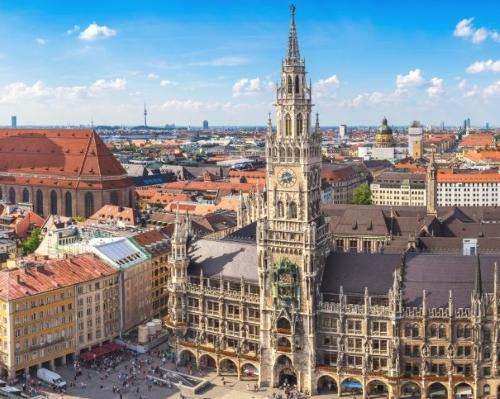
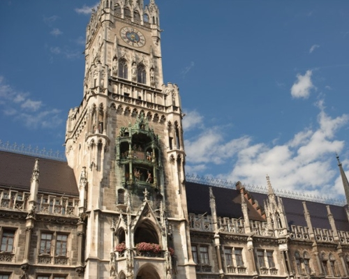
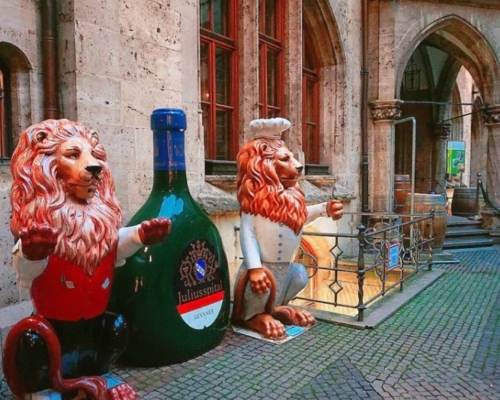

마리엔 광장
Marienplatz
- 
- 
- 
주소
정보
꿀팁
교통
운영 시간
입장료
Marienplatz 1, 80331 Munich, Bavaria Germany, 독일
마리엔 광장은 독일 뮌헨에 위치한 광장이다.
1158년부터 뮌헨의 중앙광장 역할을 했다.
시청사 건물의 뾰족한 첨탑에서 펼쳐지는
인형극이 유명하다.
원래는 마리아 광장이었다.
Marienplatz는 독일어로 Maria와 Platz가 합쳐지면서
연결어미가 변형된 이름이다.
시계탑에는 전망대도 있는데 꼭대기에 오르면
뮌헨 시내를 한눈에 조망해볼 수도 있다.
s bahn을 타면 갈 수 있다.
유레일 소지자는 s bahn 무료!
중엉역에서 마리엔 광장은 지하철 모든 호선이 다
지나간다. 내리는 곳 잘 확인하기!!
지하철, 버스
5~9월 매일 10:00~19:00
10~4월 월~금 10:00~17:00 / 토, 일, 공휴일 휴무
인형극, 매일 11:00 (5~10월 정오, 오후 9시 두 차례 추가)
2 (EUR)